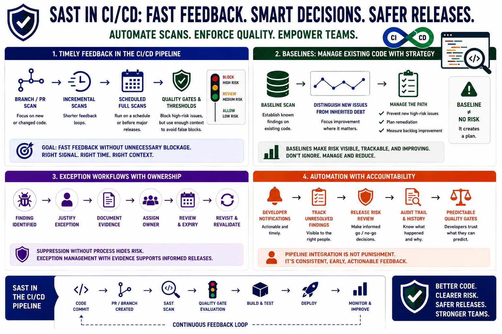

Pipeline Integration and Release Controls
Connecting to LMS... Progress: in progress

Narration
SAST in CI/CD should provide timely feedback while preserving accountability and judgment. Branch and pull request scanning can focus on new or changed code. Incremental scans can shorten feedback loops. Full scans can run on a schedule or before major releases. Quality gates and severity thresholds can prevent high-risk issues from moving forward, but they should be designed with enough context to avoid unnecessary blockage.
Baseline scans are useful when adopting SAST on an existing codebase. They establish known findings so the team can distinguish new issues from inherited debt. A baseline does not make old risk disappear. It creates a manageable path: prevent new high-risk issues, plan remediation for existing issues, and measure whether the backlog is improving. Without this strategy, teams may respond by ignoring the tool entirely.
Exception workflows need ownership. Sometimes a finding cannot be fixed immediately, is not reachable, is mitigated by another control, or requires a larger design change. Exceptions should be justified, documented, reviewed, assigned, and revisited. Suppression without process can hide real risk; exception management with evidence can support informed release decisions.
Automation should not hide responsibility. Developer notifications, tracking unresolved findings, release risk review, and audit trails help teams understand what happened and why. Break-the-build decisions should be predictable enough that developers trust them. The purpose of pipeline integration is not punishment. It is consistent, early, actionable feedback that helps teams release software with fewer avoidable risks.